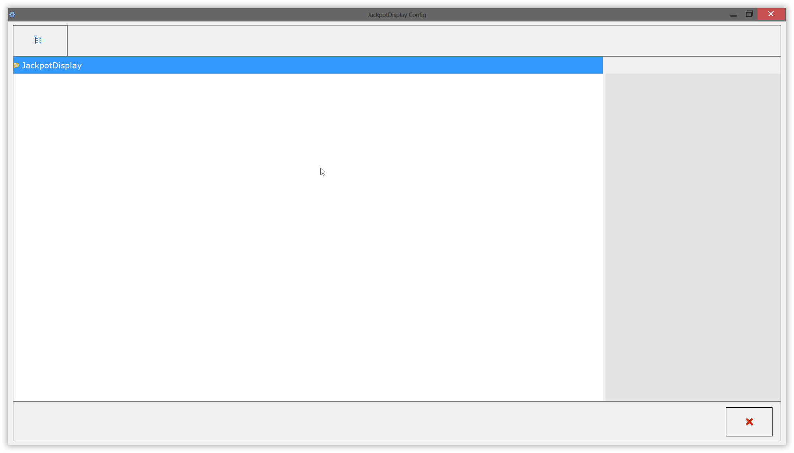
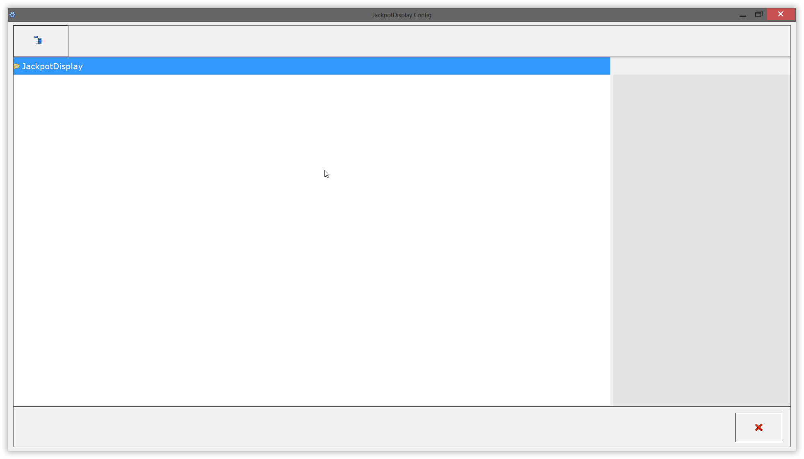
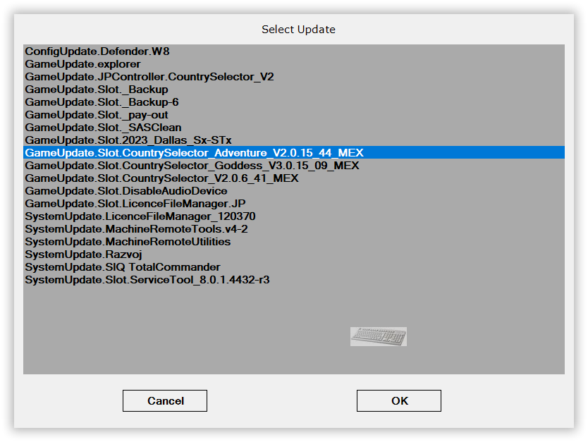
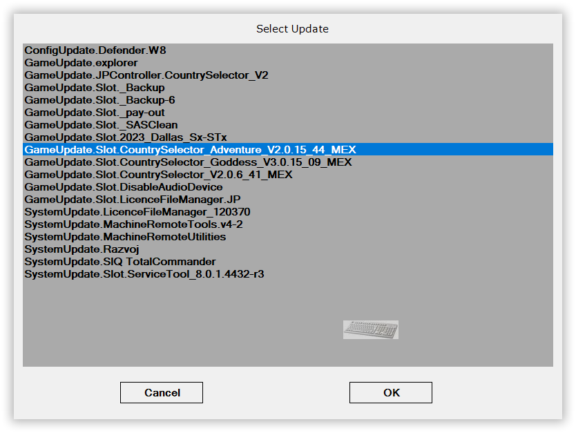
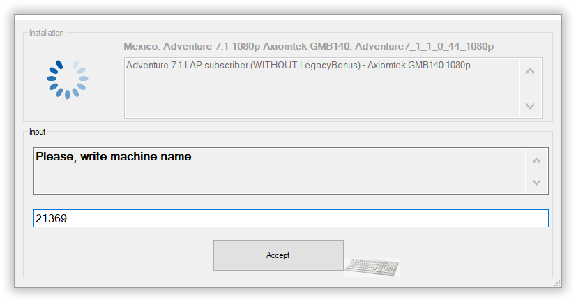
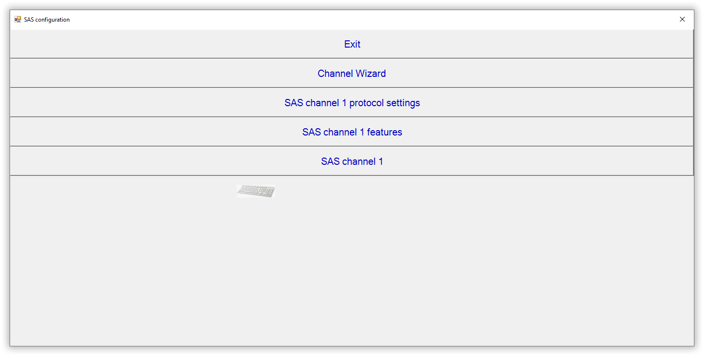
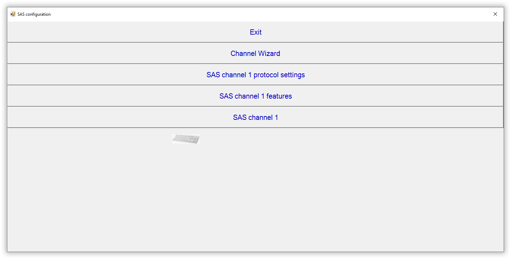

[WinSCP o Filezilla]
[Usb con Macrium]
[Adventure]
/Adventure_7.1/Adventure7-1_800p_Mex_5c93_1036_DA77_Win8_31012023-00-00.mrimg [Kino DA77]
/Adventure_7.1/Adventure7-1_Mex_5c93_1036_Axiomtek_Win10_30012023-00-00.mrimg [Axiomtek]
/Adventure_7.1/GameUpdate.Slot.CountrySelector_V2.0.15_44_MEX.zip
/Adventure_7.1/Adventure7-1_Mex_5c93_1036_Axiomtek_Win10_30012023-00-00.mrimg [Axiomtek]
/Adventure_7.1/GameUpdate.Slot.CountrySelector_V2.0.15_44_MEX.zip
[Jackpot]
Insertar la memoria USB e identificar qué unidad asigna (ejem. E:)
Abres Rufus.exe
Seleccionamos la unidad USB:
Seleccionamos la unidad USB:

Damos en SELECT
Buscamos y seleccionamos el archivo .ISO de (Macrium-Reflect.iso) y damos en abrir:
Validamos que en "File System" esté en NTFS

Damos en START

Seleccionamos Write in ISO Image Mode (Recommended) con OK

Confirmamos el borrado de archivos con OK

Comenzará el proceso....
Esperamos hasta que aparezca READY y Damos en Close

Por último (opcional), copiamos imagen .mrimg del mix en la memoria USB:
Instale la imagen en el SSD del EGM ST3 (Win10) o S3 (Win 8) utilizando Macrium.
Ingreso a la selección de booteo en EGM con la USB
 Se recomienda seleccionar el booteo de la USB en UEFI
Ya cargado Macrium
Seleccionamos "Browse for an image file..."
Se recomienda seleccionar el booteo de la USB en UEFI
Ya cargado Macrium
Seleccionamos "Browse for an image file..."
 Buscamos la imagen correspondiente a cargar (S3, ST3 o JPController) con extension .mrimg y damos en open
Buscamos la imagen correspondiente a cargar (S3, ST3 o JPController) con extension .mrimg y damos en open
 Vamos a la seccion de abajo y damos en "Restore Image"
En la seccion de "Destination" - Damos en "Select a disk to restore to..."
Seleccionamos el disco local
Damos en Next
Luego en Finish
Vamos a la seccion de abajo y damos en "Restore Image"
En la seccion de "Destination" - Damos en "Select a disk to restore to..."
Seleccionamos el disco local
Damos en Next
Luego en Finish
 Confirmamos sobre escribir volumen con "continue..."
Confirmamos sobre escribir volumen con "continue..."
 Esperamos a que termine el proceso
Esperamos a que termine el proceso
 Cerramos todas las ventanas y se reiniciará el EGM
Cerramos todas las ventanas y se reiniciará el EGM
[F7] Para ingresar al Bios setup en una DA77
[DEL] Para ingresar al Bios setup en una Axiomtek
Se recomienda seleccionar el booteo de la USB en UEFI
Ya cargado Macrium
Seleccionamos "Browse for an image file..."
Buscamos la imagen correspondiente a cargar (S3, ST3 o JPController) con extension .mrimg y damos en open
Vamos a la seccion de abajo y damos en "Restore Image"
En la seccion de "Destination" - Damos en "Select a disk to restore to..."
Seleccionamos el disco local
Damos en Next
Luego en Finish
Confirmamos sobre escribir volumen con "continue..."
Esperamos a que termine el proceso
Cerramos todas las ventanas y se reiniciará el EGM
Configuración de Jackpot Controller
Instala la imagen en el pc correspondiente utilizando el software Macrium.
Cuando la copia de Macrium haya finalizado, el EGM se reiniciara y la configuración de inicio automático del Jackpot Controller nos guiará a través de los ajustes básicos del Jackpot Controller, los cuales en esta instancia están establecidos en los valores predeterminados.
Ingrese el número de serie del controlador de jackpot (GJP) y presione “OK”. La PC se reiniciará.
 Después de reiniciar, se abrirá la ventana "JackpotDisplay Config". Cierre la ventana con la "X" en la esquina inferior derecha.

Se abrirá la ventana del “Aurum currency manipulator”. Presione el botón "Add".
Aparecerá la ventana “Currency list”. Seleccione la moneda deseada y presione el botón “Accept”.
Después de reiniciar, se abrirá la ventana "JackpotDisplay Config". Cierre la ventana con la "X" en la esquina inferior derecha.

Se abrirá la ventana del “Aurum currency manipulator”. Presione el botón "Add".
Aparecerá la ventana “Currency list”. Seleccione la moneda deseada y presione el botón “Accept”.
 Volverá a la ventana del "Aurum currency manipulator" con una moneda seleccionada que se muestra. Presione el botón "Save and close" para confirmar la selección.
Se abrirá la ventana “Jackpot controller installation”. Cierre la ventana con la "X" en la esquina inferior derecha.
Comenzará a cargar el progresivo
Volverá a la ventana del "Aurum currency manipulator" con una moneda seleccionada que se muestra. Presione el botón "Save and close" para confirmar la selección.
Se abrirá la ventana “Jackpot controller installation”. Cierre la ventana con la "X" en la esquina inferior derecha.
Comenzará a cargar el progresivo
Solicitud de la licencia de Jackpot Controller
Solicita la licencia para Jackpot de Adventure con los siguientes datos: Serie de JP y Wibu Key por correo.
Cuando se muestre la pantalla inicial
Presione la tecla INSERT para interrumpir el inicio e ingresa al BiOS Login Si se hace correctamente, aparecerá una ventana de inicio del BiOS Login. presionamos la tecla BLOCK NUM para habilitar la celda de usuario en verde e Ingrese el nombre de usuario y la contraseña del administrador para ingresar
Si se hace correctamente, aparecerá una ventana de inicio del BiOS Login. presionamos la tecla BLOCK NUM para habilitar la celda de usuario en verde e Ingrese el nombre de usuario y la contraseña del administrador para ingresar
 La licencia correspondiente para el Jackpot Controller. Las licencias deben estar en una carpeta creada en el USB de esta formato:
La licencia correspondiente para el Jackpot Controller. Las licencias deben estar en una carpeta creada en el USB de esta formato:
usb:/goldclub/licenses/LicenceXX-XXXXXXXX.xml Dentro del BiOS, abra la pestaña "Restore" y presione el botón "System update" para abrir la ventana de actualización del sistema.
 Seleccione la licencia del controlador de jackpot titulada "GameUpdate.Slot.LicenceFileManager.JP" y presione "OK".
Seleccione la licencia del controlador de jackpot titulada "GameUpdate.Slot.LicenceFileManager.JP" y presione "OK".
 Se abre una ventana de confirmación. Presione “YES”.
Se abre una ventana de confirmación. Presione “YES”.
 Se abre un Administrador de archivos de licencia, que muestra la información de la licencia actual. Pulse el botón “COPY LICENCE”.
Se abre un Administrador de archivos de licencia, que muestra la información de la licencia actual. Pulse el botón “COPY LICENCE”.
 Se abre una ventana de confirmación de actualización de licencia. Presione "OK" y reinicie el controlador de jackpot.
Se abre una ventana de confirmación de actualización de licencia. Presione "OK" y reinicie el controlador de jackpot.

Ajustes de configuración del EGM
Instala la imagen en el EGM correspondiente utilizando el software Macrium.
Cuando la copia de Macrium haya finalizado, el EGM se reiniciara y la configuración de inicio automático del EGM nos guiará a través de los ajustes básicos del EGM, los cuales en esta instancia están establecidos en los valores predeterminados.
Configurar No. de Serie
 Configurar llave Dallas (Ingresala 2 veces)
Configurar llave Dallas (Ingresala 2 veces)
 Configurar Denominaciones y darle en Next
Configurar Dallas de la sala y darle en Next
Configurar Billetero
Darle en REMOVE BILL, quitar la seleccion de "Active" y darle APPLY como en la sig. imagen:
Configurar Denominaciones y darle en Next
Configurar Dallas de la sala y darle en Next
Configurar Billetero
Darle en REMOVE BILL, quitar la seleccion de "Active" y darle APPLY como en la sig. imagen:
 Configurar Monedero
Darle en REMOVE Coin, quitar la seleccion de "Active" y darle APPLY como en la sig. imagen:
Validar No. de serie y Lenguaje y dar Close
Configurar Monedero
Darle en REMOVE Coin, quitar la seleccion de "Active" y darle APPLY como en la sig. imagen:
Validar No. de serie y Lenguaje y dar Close
 Cuando se muestre la pantalla de inicio inicial
Acceda a la BiOS de EGM haciendo clic en la esquina superior izquierda de la pantalla de inicio o presionando la tecla [INSERT]
Si se hace correctamente, se le presentará la pantalla de inicio de sesión de BiOS con un código QR y un teclado numérico
Se escanea el código con tu dispositivo móvil y se enviará al correo slot.login@winsysgroup.com (sin asunto)
Cuando se muestre la pantalla de inicio inicial
Acceda a la BiOS de EGM haciendo clic en la esquina superior izquierda de la pantalla de inicio o presionando la tecla [INSERT]
Si se hace correctamente, se le presentará la pantalla de inicio de sesión de BiOS con un código QR y un teclado numérico
Se escanea el código con tu dispositivo móvil y se enviará al correo slot.login@winsysgroup.com (sin asunto)
 El servidor responderá con un código de 6 digitos que se ingresaran al EGM
El servidor responderá con un código de 6 digitos que se ingresaran al EGM
 Si se hace correctamente, yá habrás ingresado correctamente
Vamos a la pestaña de RESTORE
Si se hace correctamente, yá habrás ingresado correctamente
Vamos a la pestaña de RESTORE
 Seleccionamos System update
Seleccionamos System update
 Seleccionamos el update GameUpdate.Slot.CountrySelector_Adventure_V2.0.15.44_MEX.zip

Confirmamos con YES
Seleccionamos el update GameUpdate.Slot.CountrySelector_Adventure_V2.0.15.44_MEX.zip

Confirmamos con YES

Seleccionamos el tipo de placa que tiene el EGM
Para placa [DA77]

Para placa [Axiomtek]

Seleccionamos [configure] dependiendo la denominación con la opción [(WHITOUT) LegacyBonus]
Confirmamos con YES
Ingresamos la serie del EGM
Ingresamos la serie del Jackpot Controller

El EGM se reiniciará haciendo un RAMCLEAR INITIAL SETUP

Por lo que tendrémos que configurar los parametros anteriormente mencionados.
- Configuración de Dallas
- Denominación
- Configuración de dallas de la sala
- Desabilitar los Billeteros
- Desabilitar los Monederos
- Validar Serie y Lenguaje
Solicitud de las Licencias del EGM
Solicita las licencias para el EGM de Adventure con los siguientes datos por correo: Mix, Serie de JP y Wibu Key.
Cuando se muestre la pantalla inicial
Presione la tecla INSERT para interrumpir el inicio e ingresa al BiOS Login Si se hace correctamente, aparecerá una ventana de inicio del BiOS Login. presionamos la tecla BLOCK NUM para habilitar la celda de usuario en verde e Ingrese el nombre de usuario y la contraseña del administrador para ingresar La licencia correspondiente para el Jackpot Controller. Las licencias deben estar en una carpeta creada en el USB de este formato:- usb:/goldclub/licenses/licence_XX-XXXXXXXX.dll
- usb:/goldclub/licenses/LicenceXX-XXXXXXXX.xml
 Seleccione la licencia del controlador de jackpot titulada "GameUpdate.Slot.LicenceFileManager.JP" y presione "OK".
Seleccione la licencia del controlador de jackpot titulada "GameUpdate.Slot.LicenceFileManager.JP" y presione "OK".
 Se abre una ventana de confirmación. Presione “YES”.
Se abre un Administrador de archivos de licencia, que muestra la información de la licencia actual. Pulse el botón “COPY LICENCE”.
Se abre una ventana de confirmación de actualización de licencia. Presione "OK" y reinicie el controlador de jackpot.
Se abre una ventana de confirmación. Presione “YES”.
Se abre un Administrador de archivos de licencia, que muestra la información de la licencia actual. Pulse el botón “COPY LICENCE”.
Se abre una ventana de confirmación de actualización de licencia. Presione "OK" y reinicie el controlador de jackpot.
 
